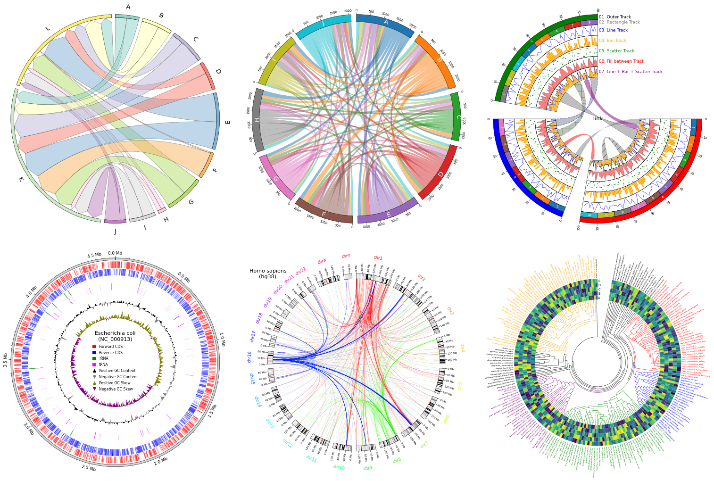

pyCirclize: Circular visualization in Python


Overview
pyCirclize is a circular visualization python package implemented based on matplotlib. This package is developed for the purpose of easily and beautifully plotting circular figure such as Circos Plot and Chord Diagram in Python. In addition, useful genome and phylogenetic tree visualization methods for the bioinformatics field are also implemented. pyCirclize was inspired by circlize and pyCircos.

Installation
Python 3.9 or later is required for installation.
Install PyPI package:
pip install pycirclize
Install conda-forge package:
conda install -c conda-forge pycirclize
API Usage
API usage is described in each of the following sections.